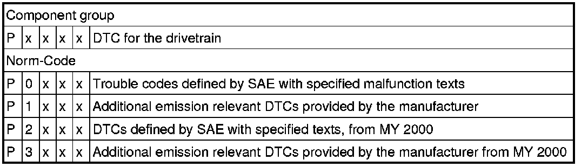
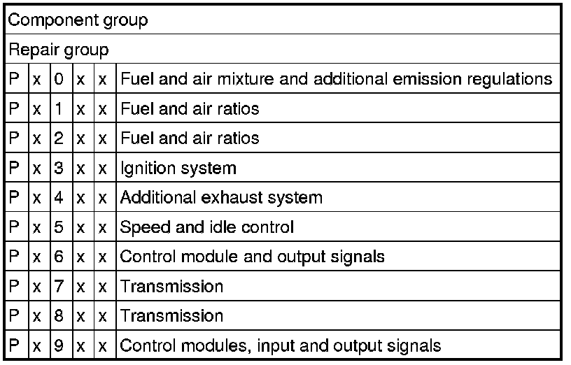
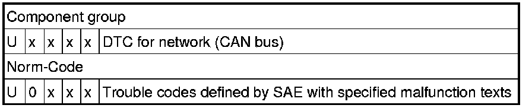
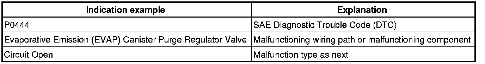

Reading Diagnostic Trouble Codes
Diagnostic Modes 01 - 09
The information provided in Modes 01 through 09 displays the various levels of emission related data that may be monitored, as well as the ability to retrieve and read stored DTC trouble codes , erase stored DTC trouble codes, generate readiness codes, and select the various PIDs and Test-IDs used within the modes to monitor the engine, and emission related component parameters.
• Depending on scan tool and protocol used, the information displayed may be referred to by different names such as Test-ID (TID), Hex-ID, Component-ID (CID), On-Board Diagnostic Monitor Identifier (OBDMID), or contain no name at all and be referenced by only a number.
Diagnostic Mode 03 - Read DTC Memory
Diagnostic Mode 03 makes it possible to read emissions-related faults (confirmed DTCs: faults which have activated the MIL) in the ECM and in the TCM.
When the Engine Control Module (ECM) recognizes an emission related fault, it turns on the Malfunction Indicator Lamp (MIL) or if a Electronic Throttle Malfunction is recognized, the Engine Control Module (ECM) turns on the Electronic Power Control (EPC) Warning Lamp which are both located in the instrument cluster.
The DTCs are sorted by SAE code with the DTC tables consisting of a 5-digit alpha-numeric value.
Depending on scan tool and protocol used, the information displayed in diagnostic mode 03 may be referred to by different names such as Test-ID (TID), Hex-ID, Component-ID (CID), On-Board Diagnostic Monitor Identifier (OBDMID), or contain no name at all and be referenced by only a number.
The following tables provide a breakdown and explanation of the DTC code.
P-Codes


U-Codes

Procedure
- Connect the scan tool.
- Switch the ignition to the "ON" position.
- Select "Diagnostic Mode 03 - Interrogating Fault Memory".
- The stored DTC or DTCs will be displayed on the scan tool screen.
The following table is an example of the DTC information that may be displayed on the scan tool screen:

- Refer to the following DTC tables for the diagnostic repair procedure:
• --> [ SAE P0xxx Diagnostic Trouble Codes ].
• --> [ SAE P1xxx Diagnostic Trouble Codes ].
• --> [ SAE P2xxx Diagnostic Trouble Codes ].
• --> [ SAE P3xxx Diagnostic Trouble Codes ].
• --> [ SAE U0xxx Diagnostic Trouble Codes ].
- Switch the ignition off.